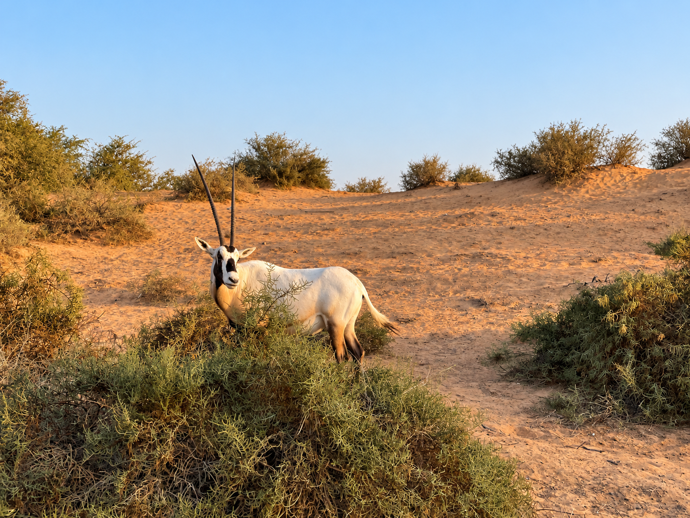

Stay
Ritz-Carlton, Al Wadi Desert
The reason to head beyond Dubai. A huge desert property best explored slowly, preferably by bicycle, with wildlife appearing around the grounds.

Dubai · United Arab Emirates
We’ve been to Dubai a few times, but one trip took us somewhere that felt very different from the city we already knew.
We headed out to Ras Al Khaimah and the Ritz-Carlton, Al Wadi Desert, a huge desert resort where the pace changed completely. We explored the property by bike, regularly stopping as animals appeared among the trees and scrub.
The kids flew owls and birds of prey, and we headed further into the desert on quads and buggies. It was the kind of experience that made the UAE feel much bigger than Dubai.
Back in the city, we returned to the energy of Dubai itself, staying at Atlantis and diving in the aquarium, as well as spending time at the One&Only Royal Mirage.
The photographs


Where
The contrast is the attraction. Dubai delivers the architecture, restaurants and energy, while Ras Al Khaimah takes you out into the desert.
Stay
We stayed at Atlantis and the One&Only Royal Mirage in Dubai, then headed north to the Ritz-Carlton, Al Wadi Desert.
Getting around
Dubai is easy to navigate by car or taxi. Out at Al Wadi, bicycles became the best way to explore the resort and the surrounding desert.
Don't miss
The desert is where the trip changed character. Wildlife, birds of prey, camels and the freedom of the dunes made Ras Al Khaimah one of the highlights.
Our recommendations
Stay
The reason to head beyond Dubai. A huge desert property best explored slowly, preferably by bicycle, with wildlife appearing around the grounds.
Stay
Big, busy and unmistakably Dubai. We stayed here for the aquarium experience and the chance to get underwater among the marine life.
Stay
A very different side of Dubai — elegant, established and beautifully landscaped, with a more relaxed resort feel.
Experience
One of the most memorable experiences for the kids was flying owls and birds of prey out in the desert.
Experience
Quads and buggies took us out beyond the resort and into the dunes — a completely different perspective on the UAE.
Experience
At Al Wadi, the bikes were more than just transport. They made it possible to disappear into the property and regularly come across animals along the way.
From the journal
Dubai is easy to understand from the skyline: huge hotels, extraordinary architecture, beaches, restaurants and a city that seems to keep building upwards.
But for us, the more memorable part of the trip came when we left it behind.
At Al Wadi, the children were flying birds of prey, we were cycling between the trees and animals appeared almost around every corner. Then came the desert drive — sand, buggies and nothing much on the horizon.
That contrast is what stayed with us. Dubai is spectacular, but the desert reminded us that there is a much quieter UAE just beyond the city.
More from our camera


On the map